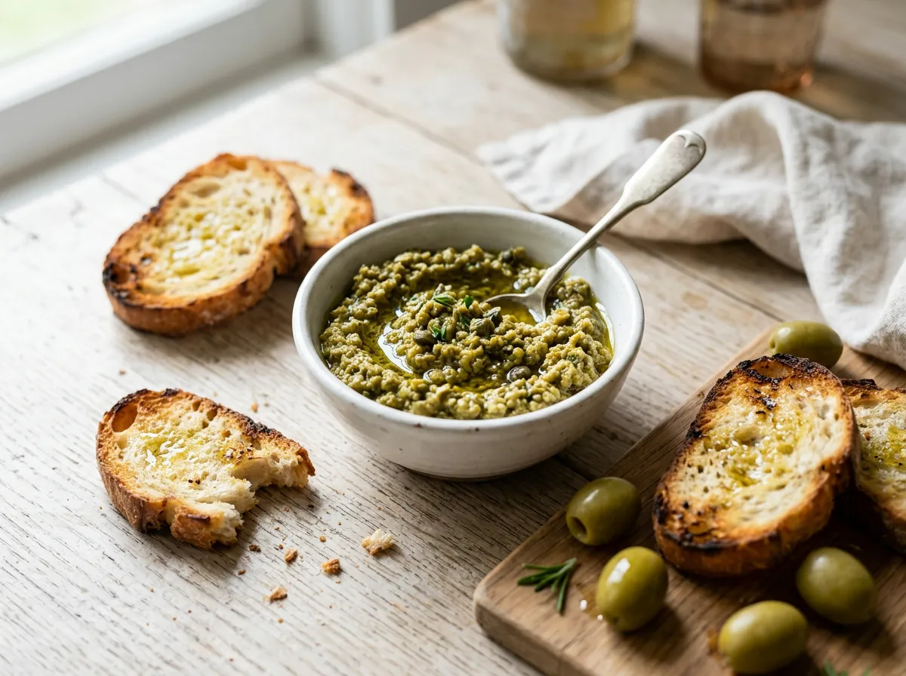

Green olive tapenade
See recipe
Ingredients
150 g pitted green olives, 1 garlic clove, 1 tablespoon capers, juice of half a lemon, 4 tablespoons extra virgin olive oil.
Method
Blend everything into a thick paste. Serve on toast, with crudités or alongside cheese.